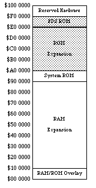
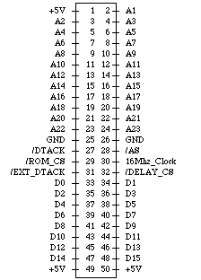
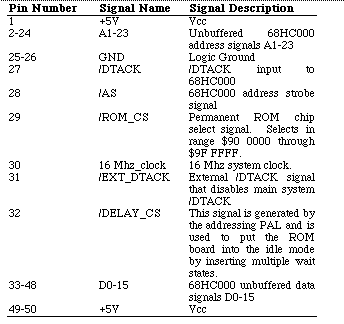
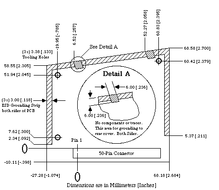

|
|
This Technical Note explains the practice of and theory behind compatible use
of the expansion ROM in the Macintosh Portable.
[Oct 01 1989]
|
Introduction
Due to the unique nature of the Macintosh Portable, developers now have the
ability to add ROM to the Macintosh. To provide for compatible shared use of
this ROM space with Apple and other developers, this Note describes the feature
and suggests methods of shared implementation.
Back to top
Address Space
The Macintosh Portable contains 256K of processor ROM, which is fundamentally
the same as the ROM in the Macintosh SE. This ROM is located at the low end of
a 1 MB ROM space. With an expansion card, one can either completely replace
the 1 MB ROM or simply add an additional 4 MB of ROM. The original 1 MB of
address space is reserved for use by Apple, but the additional 4 MB
address space is available for third-party developers.
Apple reserved ROM space is located from $90 0000 through $9F FFFF. You can
replace this ROM space with an expansion board, thus overriding these ROMs;
however, if you override these ROMs your machine will no longer work with most
applications. This ability to override the original ROMs is intended for Apple
in the event that a ROM upgrade is ever necessary for the Macintosh Portable.
Developers should use the 4 MB ROM address space from $A0 0000 through $DF
FFFF, which is illustrated in Figure 1, for expansion.
Since Apple could provide a ROM upgrade (on a ROM expansion board), we
recommend that developers use a standard 32-pin DIP socketed ROM part for any
expansion board. Following this recommendation ensures that the user will
never have to choose between an Apple ROM upgrade and a third-party expansion
board, since Apple could provide sockets for third-party ROMs if we were to
produce such an upgrade.

Figure 1 - Macintosh Portable Memory Map
Back to top
Expansion ROM Board
If Apple were to produce an expansion ROM board for an upgrade, it would have
the following characteristics. Side one would contain four 32-pin ROM sockets
compatible with 128K x 8 bit or 512K x 8 bit ROMs, a dip switch for choosing
between 128K or 512K socket address sizes, and appropriate decoupling
capacitors. Side two would contain Apple's expansion ROMs and any additional
circuitry. This design implies that developers would be able to use at most
either 512K or 2 MB of the total 4 MB expansion space.
When designing your own expansion board, remember that it must contain
circuitry for decoding, controlling, and buffering, and it should use CMOS,
since the Macintosh Portable restricts ROM expansion boards to a maximum of
25ma. The number of wait states inserted depends upon the DTACK generated by
your board, which connects to the Macintosh Portable through a single 50-pin
connector (slot). The machine provides all of the appropriate signals (address
bus, data bus, and control) to the expansion slot, where they are decoded into
chip selects and routed to address and data buffers. These signal names and
descriptions are illustrated in Figure 2 and described in Table 1. It is also
important to buffer the address and data buffers to reduce capacitive
loading.

Figure 2 - Internal ROM Expansion Connector Signals

Table 1 - Internal ROM Expansion Connector Signal Descriptions

Figure 3 - Internal ROM Expansion Board Guidelines
Back to top
Software Standards
For the purposes of expansion ROM, Apple has introduced Electronic Disks
(EDisks), which appear to the user as very fast, silent disk drives. The EDisk
driver supports EDisks, which use RAM or ROM as their storage media.
ROM EDisks, which can be produced by third parties, are connected to the system
using the internal ROM expansion slot. The 4 MB address space allocated for
this type of expansion supports any number of ROM EDisks, as long as they start
on a 64K boundary (their size may exceed 64K). ROM EDisks behave like RAM
EDisks, except that they are read-only and cannot be resized.
Back to top
The EDisk Driver
The EDisk driver provides a system interface to EDisks similar to that provided
by the Sony and SCSI disk drivers. It supports 512 byte block I/O operations
and does not support file system tags. The EDisk driver is a ROM 'DRVR'
resource with an ID of 48, RefNum of -49, and driver name of
".EDisk". Since it is a disk driver, it also creates a Drive Queue Element for
each EDisk. Information on how these driver calls apply to the Sony driver
appear in the Disk Driver chapters of Inside Macintosh, Volumes II, IV,
& V.
Back to top
EDisk Implementation Details
The remainder of this section describes some of the implementation details,
data formats, and algorithms used by the EDisk driver that may be useful for
developers who want to produce ROM EDisks.
Data Checksumming
To provide better data integrity, the EDisk driver supports checksumming of
each data block, which is computed when a write is performed to a block and
checked on every read operation. It computes a 32-bit checksum for each
512-byte block. This calculation is performed by adding each longword in the
block to a running longword checksum, which is initially zero, and is rotated
left by one bit before each longword is added. The following assembly code
demonstrates this algorithm:
Lea TheBlock,a0 ; A0 is pointer to the block to checksum
Moveq.L #0,D0 ; D0 is the checksum, initially zero
Moveq.L #(512/4)-l,D1 ; loop counter for 1 block (4 bytes per iteration)
@Loop Rol.L #l,D0 ; rotate the checksum
Add.L (A0)+,D0 ; add the data to the running checksum
Dbra D1,@Loop ; loop through each longword in the block
|
Internal ROM EDisk Details
When the EDisk driver is opened, it searches the address range from the base of
the system ROM to $00E0 0000 for internal ROM EDisks. An internal ROM EDisk
must begin with an EDisk header block, which must start on a 64K boundary (but
may be any size). If a valid header block is found, it is compared to all
other known headers, and if it is identical to another, it is ignored to
eliminate duplicates caused by address wrapping. If the header block is
unique, the EDisk driver supports it and creates a drive queue entry for it.
The driver can support any number of internal ROM EDisks, and it is limited
only by the address space allocated for ROM.
EDisk Header Format
There is a 512-byte header block associated with ROM EDisks. This header
describes the layout of the EDisk and uniquely identifies it. The general
format of the header block is described below. The EDisk header marks the
beginning of an EDisk, and it should occur at the beginning of the ROM space
that is used for EDisk storage (i.e., starting at the first byte of a 64K ROM
block).
EDiskHeader Record 0,increment ; layout of the EDisk signature block
HdrScratch DS.B 128 ; scratch space for r/w testing and vendor info
HdrBlockSize DS.W 1 ; size of header block (512 bytes for version 1)
HdrVersion DS.W 1 ; header version number (this is version 1)
HdrSignature DS.B 12 ; 45 44 69 73 6B 20 47 61 72 79 20 44
HdrDeviceSize DS.L 1 ; size of device, in bytes
HdrFormatTime DS.L 1 ; time when last formatted (pseudo unique ID)
HdrFormatTicks DS.L 1 ; ticks when last formatted (pseudo unique ID)
HdrCheckSumOff DS.L 1 ; offset to the Checksum table, if present
HdrDataStartOff DS.L 1 ; offset to the first byte of data storage
HdrDataEndOff DS.L 1 ; offset to the last byte+l of data storage
HdrMediaIconOff DS.L 1 ; offset to the media Icon and Mask, if present
HdrDriveIconOff DS.L 1 ; offset to the drive Icon and Mask, if present
HdrWhereStrOff DS.L 1 ; offset to the Get Info Where: string, if present
HdrDriveInfo DS.L 1 ; longword for Return Drive Info call, if present
DS.B 512-* ; rest of block is reserved
EDiskHeaderSize EQU * ; size of EDisk header block
ENDR
|
HdrScratch is a 128-byte field that is used for read and write testing on
RAM EDisks to determine if the memory is ROM or RAM. On ROM EDisks, it should
be filled in by the vendor with a unique string to identify this version of the
ROM EDisk (e.g., "Copyright 1989, Apple Computer, Inc. System Tools 6.0.4
9/5/89").
HdrBlockSize is a 2-byte field that indicates the size of the EDisk header
block. The size is currently 512 bytes.
HdrVersion is a 2-byte field that indicates the version of the EDisk
header block. The version number is currently $0001.
HdrSignature is a 12-byte field that identifies a valid EDisk header
block. The signature must be set to 45 44 69 73 6B 20 47 61 72 79 20
44 in hexadecimal.
HdrDeviceSize is a 4-byte field that indicates the size of the device in
bytes, which may be greater than the actual usable storage space. One might
also think of the device size as the offset (from the beginning of the header
block) of the last byte of the storage device.
HdrFormatTime is a 4-byte field that indicates the time of day when the
EDisk was last formatted. The EDisk driver updates this for RAM EDisks when the
format control call is made. This information may be useful for uniquely
identifying a RAM EDisk.
HdrFormatTicks is a 4-byte field that indicates the value of the system
global Ticks when the EDisk was last formatted, which should be a
unique number. The EDisk driver updates this for RAM EDisks when the format
control call is made. This information may be useful for uniquely identifying
a RAM EDisk.
HdrCheckSumOff is a 4-byte field that is the offset (from the beginning of
the header block) of the checksum table, or zero if checksumming should not be
performed on this EDisk.
HdrDataStartOff is a 4-byte field that is the offset (from the beginning
of the header block) of the first block of EDisk data.
HdrDataEndOff is a 4-byte field that is the offset (from the beginning of
the header block) of the byte after the end of the last block of EDisk data.
HdrMediaIconOff is a 4-byte field that is the offset (from the beginning
of the header block) of the 128-byte icon and 128-byte icon mask, which
represents the disk media. An offset of zero indicates that the EDisk driver
should use the default media icon for this EDisk.
HdrDriveIconOff is a 4-byte field that is the offset (from the beginning
of the header block) of the 128-byte icon and 128-byte icon mask, which
represents the disk drive physical location. An offset of zero indicates that
the EDisk driver should use the default drive icon for this EDisk.
HdrWhereStrOff is a 4-byte field that is the offset (from the beginning of
the header block) of the Pascal string that describes the disk location for the
Finder Get Info command. An offset of zero indicates that the EDisk driver
should use the default string for this EDisk.
HdrDriveInfo is a 4-byte field that should be returned by the drive
information control call. A value of zero indicates that the EDisk driver
should use the default drive info for this EDisk.
You should not override the default media or drive icons without first giving
serious consideration as to how a different icon will affect the user
interface. What often appears to be a clever idea for a cute icon usually
turns out to be a source of frustration for the user when deciding what the
item is and where it is physically located.
Back to top
Some Final Thoughts
Do Not Use More Space Than You Need
As wonderful and indispensable as your ROM product may be, users may wish to
also use ROMs from another developer. Although ROM address space is quite
large (in today's terms), board space and number of ROM chip sockets is
limited. If you use only the space you really need and leave room (address
space and empty chip sockets) in your ROM product to add other ROMs, users will
never have to make a choice between your product and another, unanticipated
stroke of genius.
Keep It Relocatable
Just because your code is in ROM does not mean that it will always reside at a
specific address. When moving your ROM to another board (an Apple upgrade or
another third-party board), users should neither have to worry about address
range conflicts nor socket location. In addition, Apple may implement ROM
expansion in a future product with expanded or different address space; keeping
your ROM code relocatable could mean the difference between additional sales or
incompatibility and upgrades.
Back to top
References
Inside Macintosh, Volume II, IV, & V, The Disk Driver
Back to top
Downloadables
|

|
Acrobat version of this Note (344K)
|
Download
|
Back to top
|